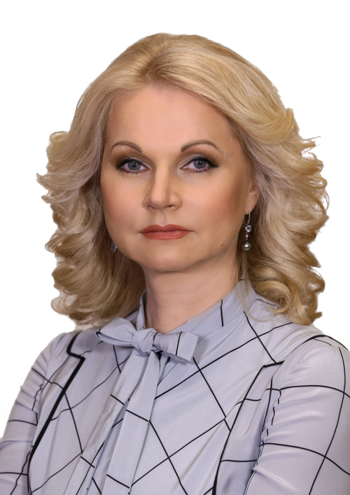

Индекс ментального благополучия — точная диагностика состояния работающего населения для управленческих решений региона.
Апробирован на всероссийской выборке.
Главой государства обозначена ключевая национальная цель — сохранение населения, укрепление здоровья, повышение благополучия людей, поддержка семьи. Для Правительства это абсолютный приоритет, который касается главной ценности государства и его самого важного социально-экономического ресурса — здоровья нации»

Инструмент даёт региону объективную диагностику с опорой для управленческих решений и повторных замеров динамики, а не разовый опрос удовлетворённости.
Всероссийская выборка работающих россиян, август 2025 — общее значение индекса, ключевые зоны внимания и адресные группы поддержки.
Около трети работающих россиян находятся на низком уровне ментального благополучия, больше половины — испытывали стрессы за последний месяц. Сильнее всего определяет картину регулярное напряжение и социальные факторы. Молодёжь и женщины — наиболее уязвимые и требующие поддержки аудитории.
Замер по работающему населению области, сентябрь 2025
Около трети работающих в Московской области находятся на низком уровне ментального благополучия, больше половины — испытывали стрессы за последний месяц. Сильнее всего определяют картину регулярное напряжение и социальные факторы. Молодёжь и женщины — наиболее уязвимые и требующие поддержки аудитории.
Скачать полный отчёт «Индекс ментального благополучия работающих россиян» август 2025
Регион, который системно измеряет и улучшает ментальное благополучие жителей и формирует устойчивую модель управления территорией.
Данные о реальном состоянии работающего населения: ключевые риски и ресурсы.
Сравнение с Россией и регионами: где ваш регион сильнее и где отстаёт.
Понятные приоритетные группы по риску для точечных региональных мер.
Повторные замеры показывают эффект мер в цифрах, а не в ощущениях.
Исследование встраивается в контур нацпроектов, чьи задачи пересекаются с диагностикой ментального состояния населения.
Проект нацелен на обеспечение экономики квалифицированными кадрами. Показатели индекса ментального благополучия — в том числе связь с производительностью и текучестью — могут служить индикатором эффективности региональной кадровой политики. Исследование выявляет «болевые точки»: уровень выгорания и стресса у работающего населения — и позволяет целенаправленно на них влиять.
Цель — создание условий для самореализации молодёжи. Индекс ментального благополучия позволяет сегментировать молодёжную аудиторию (18–35 лет), выявить группы с высокими рисками и точечно направлять меры поддержки. Это соответствует логике адресных групп в отчёте по региону.
Модернизация системы здравоохранения. Индекс ментального благополучия — инструмент оценки профилактической работы, в том числе в части психического здоровья. Рост доли жителей с высоким уровнем ментального благополучия — прямой результат эффективной работы здравоохранения и социальной поддержки на уровне региона.
Авторская научная методика с независимой экспертной валидацией — авторы разработки и замера в регионе.
Индекс ментального благополучия — авторская научная методика совместной разработки Фонда «Общественное мнение» и «Просебя».
Методика опирается на стандарты крупномасштабной социологии и прикладной психологии: согласованные шкалы, репрезентативная выборка, проверка связей между блоками и интерпретация, пригодная для решений на уровне региона.
Перед выходом в региональный замер инструмент прошёл полевую апробацию и независимую экспертную оценку — отдельно проверяли актуальность конструкта, валидность шкал, однозначность формулировок и применимость итогов для адресной политики на местах.
Заключения подготовили эксперты в области психологии, социологии, wellbeing и аналитики HR: Т. Нестик, М. Безуглова, В. Радаев, Н. Бехтерева, И. Задорин, М. Дымшиц. Координация экспертного блока — А. Ослон (ФОМ). По итогам проверки подтверждены актуальность, практическая применимость и содержательная и конвергентная валидность инструмента — методика готова к использованию в региональных исследованиях.